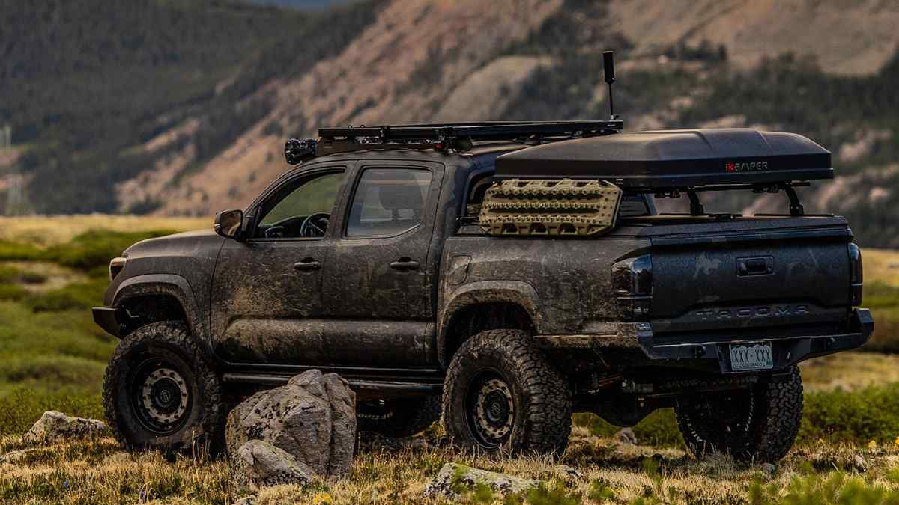

Welcome to the Overland Rental Company
Whether you're looking for an epic getaway or considering life on the road, we've got you covered!
Decisions, decisions...
From the humble (and inconspicuous) Subaru Outback to the Mercedes Sprinter and everything in between, we guarantee we have what you're looking for.
Subaru Out-there-and-back

As promised, the Subaru Outback. Built to get you to your happy place and back. Outfitted with:
- Rally light bar for low light environments
- Body Armor SU-19340 winch kit with a 5,000 lbs winch
- Thule Extended Cargo Carrier to free up extra interior space
Plenty of interior protection for your peace of mind
- Wireless charger with bluetooth
This car blends in seamlessly in an urban setting, making the occassional overnighter in a Cabella's parking lot on your way to the mountain safe and incognito, but it's rugged enough for an intimate off road adventure for two.
Toyota Tacoma TRD Pro

The Toyota Tacoma may very well be the Gold Standard for overland builds, and ours definitely won't leave you wanting. This one's sporting:
- Linear shocks with a spacer lift for those hard-to-reach places
- 33" tires
- In-house custom cut fender flares
- In-house fabricated roof and bed racks
- Midland MicroMobile® MXT400 40-watt GMRS radio
- Thule Basin Wedge hard shell rooftop tent
We promise you'll have enough tools at your disposal to reach the most remote places with ease.
Mercedes Sprinter Expedition
This is not your average Sprinter van, nor is it your average RV. This van falls somewhere between The Wild Thornberry's ComVee and a MIL-SPEC HMMWV.
Exterior
It's covered from head to toe in Line-X to prevent scratches
and a big brush bar for you to blaze your own trail (wherever it's not harmful to local wildlife)
No off road vehicle is complete without a 12,000-pound winch
A side ladder will take you to the full-length roof rack up top
and there's a nifty toolbox and spare tire are mounted on the back, just in case.
This van's drivetrain has also been converted to a 4x4 with a Dana 60 front axel and a Dana 70 in the rear
as well as hub lockers to make sure this big beast never gets stuck.
Just for good measure though, we have it sitting on 37" tires and the ride height is 8.5" taller, too.
Interior
40 gallon water tank
600 amp hours worth of battery power
electric glass cooktop
front and rear heating
20" Amazon Fire TV (don't worry, we'll check to make sure you're signed out when you get back).
We'd love to hear from you!
These were just a few of our favorite adventure campers. If there's something specific you're looking for please give us a call at 1(800)555-1313 or reach out by email at chad@overlandrentals.com!